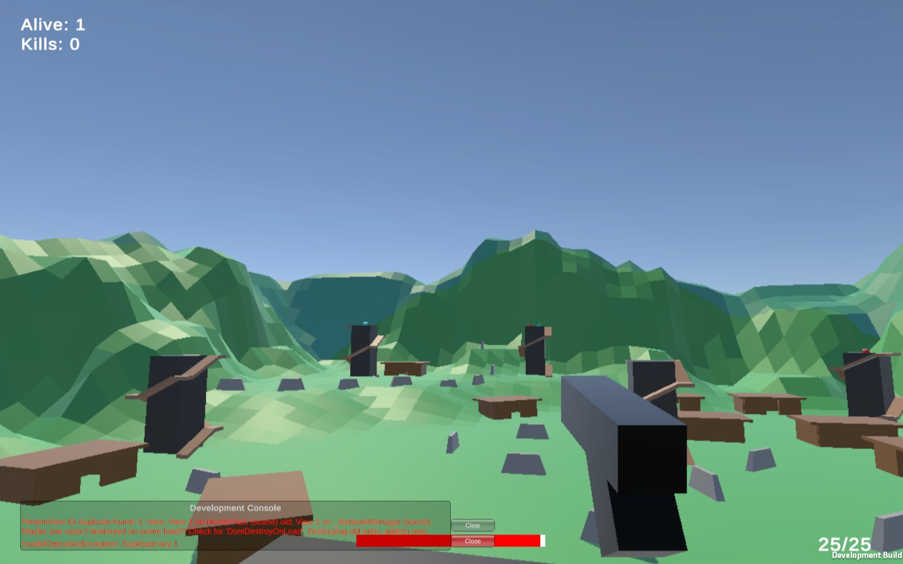

Battle Royale Multiplayer
Battle Royale Multiplayer is an online last-player-standing shooter built in Unity with Photon PUN 2. Players connect through a lobby system, drop into a compact arena, and fight with projectile weapons while a shrinking force field pushes everyone toward the center.
The project emphasizes core multiplayer architecture: a custom network manager for connecting to the master server, creating and joining rooms, synchronized player spawning, and RPC-driven game flow for starting matches, updating UI, and returning winners to the menu.
Show Project Instructions (PDF)
Key systems implemented for Battle Royale Multiplayer:
- Photon PUN 2 networking with custom network manager, master server connection, and room browser.
- Menu flow with player name entry, room creation, lobby browser, and in-room player list UI.
- Networked player controller supporting movement, jumping, and a third-person camera / spectator camera.
- Projectile-based shooting with networked damage, hit feedback, and kill tracking.
- Health and ammo pickups synchronized across the network via RPCs and PhotonViews.
- Dynamic shrinking force field that periodically contracts and damages players outside the safe zone.
- Win condition logic that detects the last surviving player, shows a victory banner, and returns all players to the menu.
